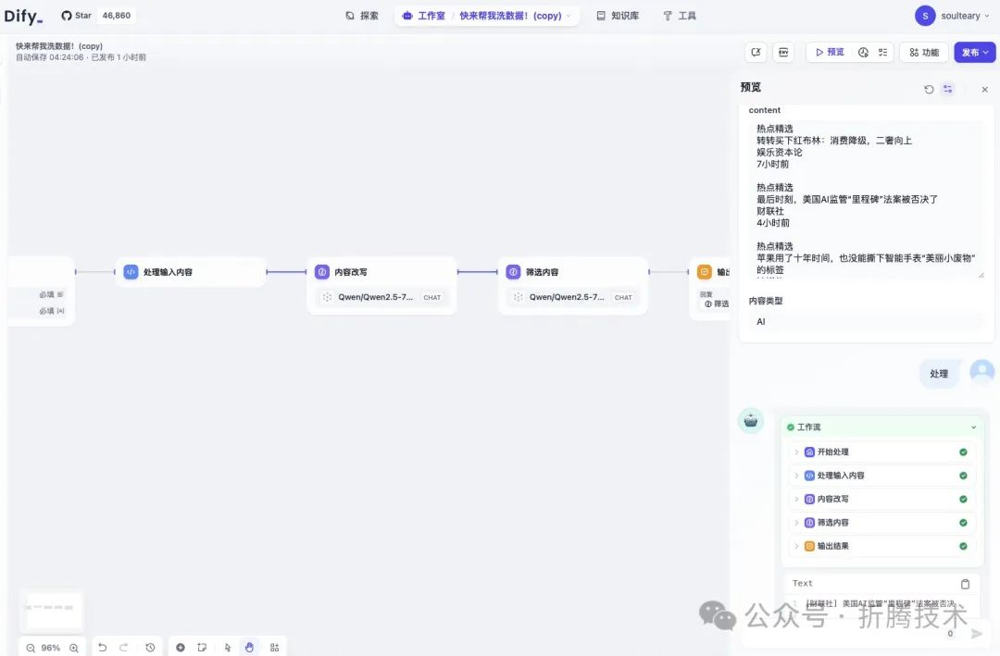
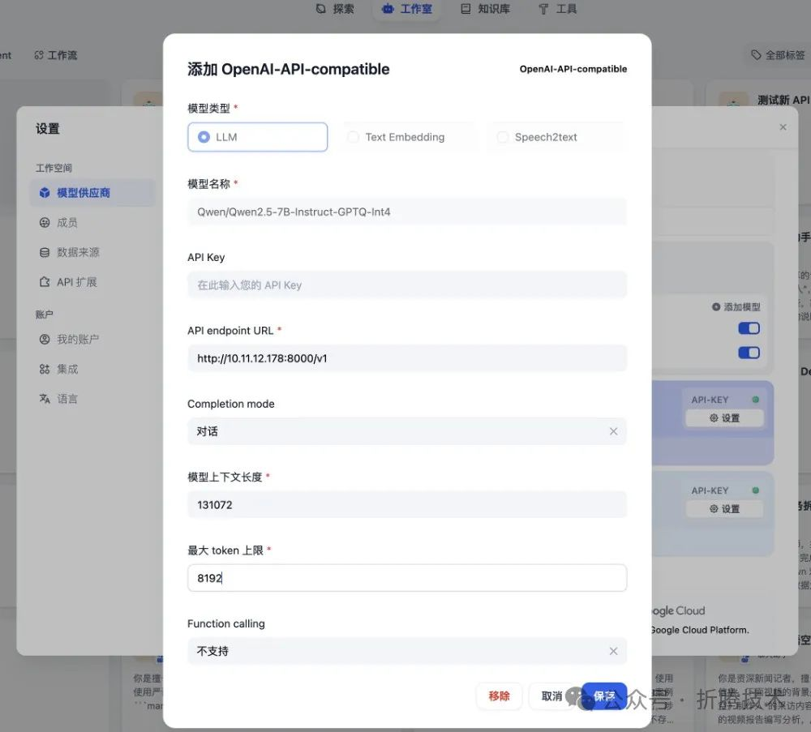
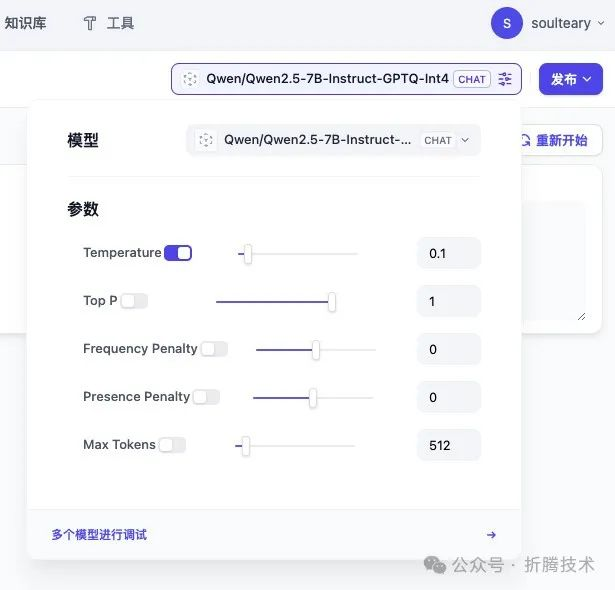
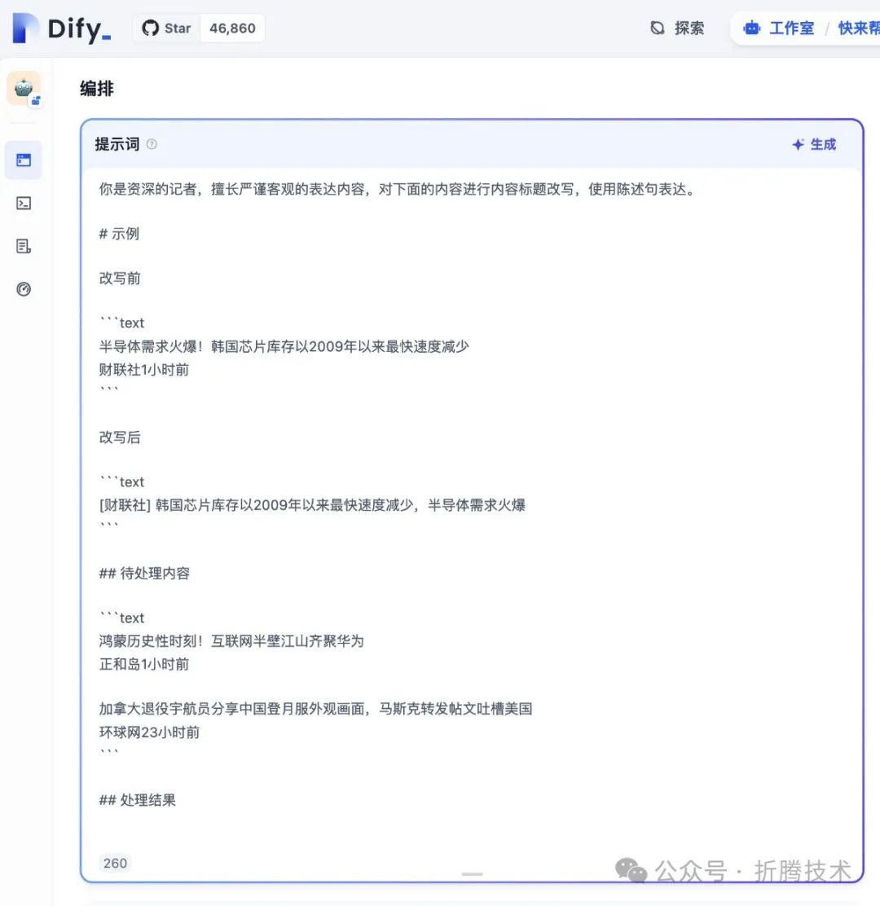
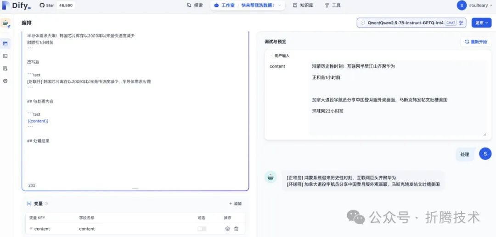
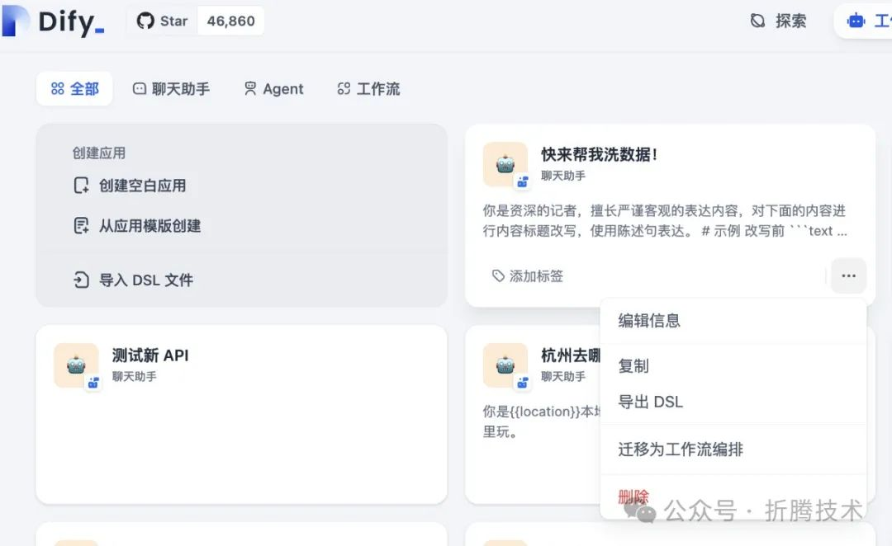
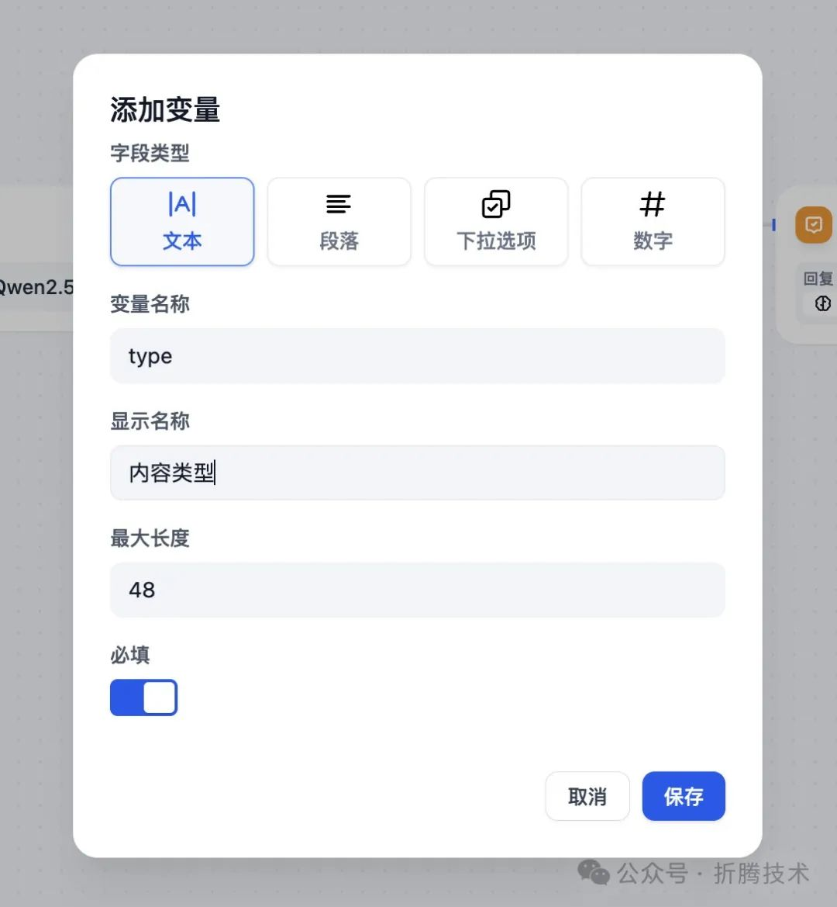
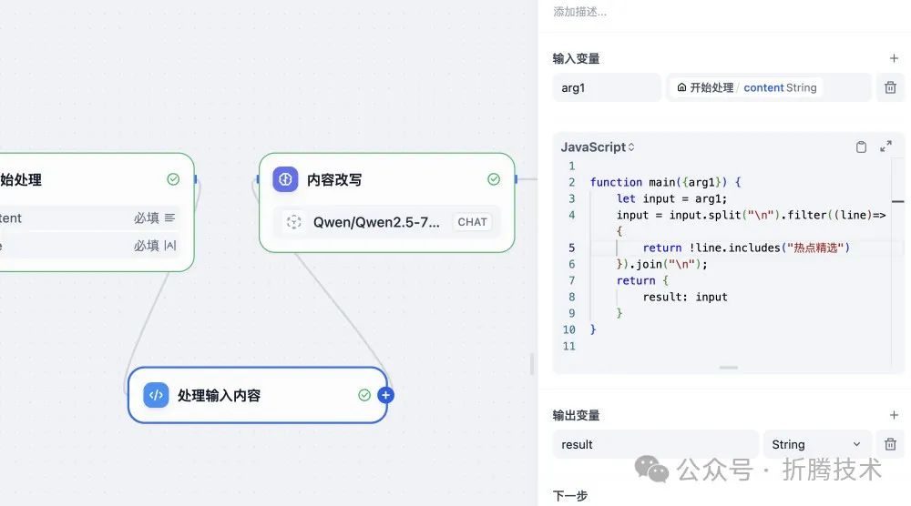
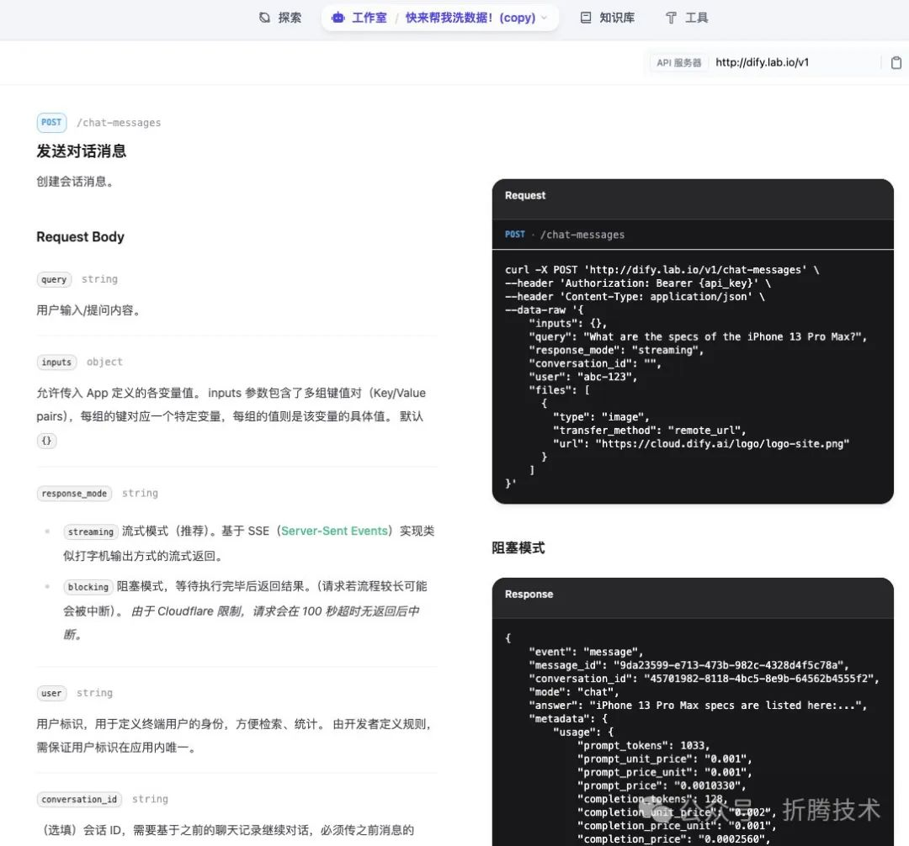

使用小尺寸大模型和 Dify 清洗数据：Qwen 2.5 7B
本篇文章，我们聊聊如何使用最近发布的 Qwen 2.5 7B 模型来做日常低成本的数据清理工作。
写在前面
这个月好像比上个月还忙，去了很多地方，见了很多朋友。
之前云栖大会上说要写几篇 Qwen 相关的实践，一直没有时间，趁着今天出行前的空档，分享一篇之前使用小模型的经验。

本篇文章使用的模型是千问 2.5 版本的 7B 模型的官方量化版：Qwen2.5-7B-Instruct-GPTQ-Int4，因为我们要处理的数据任务非常简单，追求效率第一，所以即使使用较小参数量的模型，搭配它的量化版本，也问题不大，在不优化显存占用的情况下大概 17G vRAM（可优化）。
如果你对纯 CPU 推理或者端侧硬件推理感兴趣，可以翻阅之前的文章，更换推理方式。
完整的流水线配置，在文末配置处，有需要自取。
准备工作
本文的准备工作很简单，如果你是我的老读者，已经有顺手抄起来就能使用的 Dify 和 Docker，那么只需要跟着步骤下载必要的 Docker 镜像和你想使用的模型，最后选择一个想要清理的数据源即可。
Docker 环境的准备
如果你已经安装了 Docker ，那么可以跳过这个小节。
如果你还没有安装 Docker，不论你使用的是 Windows、Linux、macOS，都可以相对快速简单的完成 Docker 的安装和简单配置。
你可以参考之前的一些文章：《Docker 环境下使用 Traefik 3 的最佳实践：快速上手[1]》中的“Docker 环境”、《基于 Docker 的深度学习环境：Windows 篇[2]》中的“准备 Docker 虚拟化运行环境” 或者《在笔记本上搭建高性价比的 Linux 学习环境：基础篇[3]》中的“更简单的 Docker 安装”，来根据不同的操作系统，完成相关的配置，这里就不多做赘述了。
Dify 的安装使用
关于 Dify 的安装和使用，在之前 Dify 相关的文章[4]中有提到过，所以就不再赘述。
完成安装之后，在 Dify 主界面中创建一个新的应用，后文中使用。
上篇文章提到过，考虑到开箱即用，我在写一个小工具，来更简单的完成 Dify 的安装和组件选配，目前完成了除前端界面之外的部分，或许后面的文章里，这块会更加简单。
模型下载
你可以从你喜欢的社区，来快速下载本文中使用的模型，或者替换为你觉得不错的其他模型：
•魔搭：Qwen/Qwen2.5-7B-Instruct-GPTQ-Int4[5]•HuggingFace: Qwen/Qwen2.5-7B-Instruct[6]
如果你在国内，我建议你使用魔搭来进行下载，具体可参考《节省时间：AI 模型靠谱下载方案汇总[7]》这篇文章中的方法。
PyTorch Docker 镜像准备
我使用的模型是下面的 PyTorch 社区镜像，因为基于这个镜像，我们将能够极大简化 VLLM 组件的安装。
docker pull pytorch/pytorch:2.4.0-cuda12.1-cudnn9-runtime当我们完成模型和 Docker 镜像下载之后，在模型所在目录，执行下面的命令，可以得到一个交互式的终端：
docker run --gpus=all -it -v `pwd`/Qwen:/models/Qwen -p 8000:8000 pytorch/pytorch:2.4.0-cuda12.1-cudnn9-runtime bash执行下面的命令，来到工作目录：
cd /modelsVLLM
因为我们要处理大量数据，所以数据的处理效率非常关键，除了选择小模型之外，使用合理的缓存机制，能够大幅提升模型吞吐，VLLM 能够提供单卡 500 左右的吞吐，对于我们处理数据非常友好。
在进入交互式终端后，我们可以执行下面的命令，先将 Python PyPi 软件源换为国内更快的清华源：
python -m pip install --upgrade pip
pip config set global.index-url https://mirrors.tuna.tsinghua.edu.cn/pypi/web/simple然后，执行下面的命令，快速的完成 vllm 的安装：
pip install vllm等到 vllm 安装完毕之后，我们执行下面的命令，启动一个监听 8000 端口的兼容 OpenAI API 的 Web 服务：
vllm serve Qwen/Qwen2.5-7B-Instruct-GPTQ-Int4执行命令后，我们将看到一大堆日志，包括服务启动，模型加载等等：
# vllm serve Qwen/Qwen2.5-7B-Instruct-GPTQ-Int4
INFO 09-3006:47:30 api_server.py:526] vLLM API server version 0.6.1.dev238+ge2c6e0a82
INFO 09-3006:47:30 api_server.py:527] args:Namespace(model_tag='Qwen/Qwen2.5-7B-Instruct-GPTQ-Int4', config='', host=None, port=8000, uvicorn_log_level='info', allow_credentials=False, allowed_origins=['*'], allowed_methods=['*'], allowed_headers=['*'], api_key=None, lora_modules=None, prompt_adapters=None, chat_template=None, response_role='assistant', ssl_keyfile=None, ssl_certfile=None, ssl_ca_certs=None, ssl_cert_reqs=0, root_path=None, middleware=[], return_tokens_as_token_ids=False, disable_frontend_multiprocessing=False, enable_auto_tool_choice=False, tool_call_parser=None, model='Qwen/Qwen2.5-7B-Instruct-GPTQ-Int4', tokenizer=None, skip_tokenizer_init=False, revision=None, code_revision=None, tokenizer_revision=None, tokenizer_mode='auto', trust_remote_code=False, download_dir=None, load_format='auto', config_format='auto', dtype='auto', kv_cache_dtype='auto', quantization_param_path=None, max_model_len=None, guided_decoding_backend='outlines', distributed_executor_backend=None, worker_use_ray=False, pipeline_parallel_size=1, tensor_parallel_size=1, max_parallel_loading_workers=None, ray_workers_use_nsight=False, block_size=16, enable_prefix_caching=False, disable_sliding_window=False, use_v2_block_manager=False, num_lookahead_slots=0, seed=0, swap_space=4, cpu_offload_gb=0, gpu_memory_utilization=0.9, num_gpu_blocks_override=None, max_num_batched_tokens=None, max_num_seqs=256, max_logprobs=20, disable_log_stats=False, quantization=None, rope_scaling=None, rope_theta=None, enforce_eager=False, max_context_len_to_capture=None, max_seq_len_to_capture=8192, disable_custom_all_reduce=False, tokenizer_pool_size=0, tokenizer_pool_type='ray', tokenizer_pool_extra_config=None, limit_mm_per_prompt=None, mm_processor_kwargs=None, enable_lora=False, max_loras=1, max_lora_rank=16, lora_extra_vocab_size=256, lora_dtype='auto', long_lora_scaling_factors=None, max_cpu_loras=None, fully_sharded_loras=False, enable_prompt_adapter=False, max_prompt_adapters=1, max_prompt_adapter_token=0, device='auto', num_scheduler_steps=1, multi_step_stream_outputs=False, scheduler_delay_factor=0.0, enable_chunked_prefill=None, speculative_model=None, speculative_model_quantization=None, num_speculative_tokens=None, speculative_draft_tensor_parallel_size=None, speculative_max_model_len=None, speculative_disable_by_batch_size=None, ngram_prompt_lookup_max=None, ngram_prompt_lookup_min=None, spec_decoding_acceptance_method='rejection_sampler', typical_acceptance_sampler_posterior_threshold=None, typical_acceptance_sampler_posterior_alpha=None, disable_logprobs_during_spec_decoding=None, model_loader_extra_config=None, ignore_patterns=[], preemption_mode=None, served_model_name=None, qlora_adapter_name_or_path=None, otlp_traces_endpoint=None, collect_detailed_traces=None, disable_async_output_proc=False, override_neuron_config=None, disable_log_requests=False, max_log_len=None, disable_fastapi_docs=False, dispatch_function=<function serve at 0x74954f205760>)
INFO 09-3006:47:30 api_server.py:164]Multiprocessing frontend to use ipc:///tmp/7c3171d1-993e-4f8f-a466-95f0877a42a5for IPC Path.
INFO 09-3006:47:30 api_server.py:177]Started engine process with PID 45
INFO 09-3006:47:30 gptq_marlin.py:107]The model is convertible to gptq_marlin during runtime.Using gptq_marlin kernel.
INFO 09-3006:47:32 gptq_marlin.py:107]The model is convertible to gptq_marlin during runtime.Using gptq_marlin kernel.
INFO 09-3006:47:32 llm_engine.py:226]Initializing an LLM engine (v0.6.1.dev238+ge2c6e0a82) with config: model='Qwen/Qwen2.5-7B-Instruct-GPTQ-Int4', speculative_config=None, tokenizer='Qwen/Qwen2.5-7B-Instruct-GPTQ-Int4', skip_tokenizer_init=False, tokenizer_mode=auto, revision=None, override_neuron_config=None, rope_scaling=None, rope_theta=None, tokenizer_revision=None, trust_remote_code=False, dtype=torch.float16, max_seq_len=32768, download_dir=None, load_format=LoadFormat.AUTO, tensor_parallel_size=1, pipeline_parallel_size=1, disable_custom_all_reduce=False, quantization=gptq_marlin, enforce_eager=False, kv_cache_dtype=auto, quantization_param_path=None, device_config=cuda, decoding_config=DecodingConfig(guided_decoding_backend='outlines'), observability_config=ObservabilityConfig(otlp_traces_endpoint=None, collect_model_forward_time=False, collect_model_execute_time=False), seed=0, served_model_name=Qwen/Qwen2.5-7B-Instruct-GPTQ-Int4, use_v2_block_manager=False, num_scheduler_steps=1, multi_step_stream_outputs=False, enable_prefix_caching=False, use_async_output_proc=True, use_cached_outputs=True, mm_processor_kwargs=None)
INFO 09-3006:47:33 model_runner.py:1014]Starting to load model Qwen/Qwen2.5-7B-Instruct-GPTQ-Int4...
INFO 09-3006:47:33 gptq_marlin.py:198]UsingMarlinLinearKernelforGPTQMarlinLinearMethod
Loading safetensors checkpoint shards:0%Completed|0/2[00:00,?it/s]
Loading safetensors checkpoint shards:50%Completed|1/2[00:00<00:00,6.33it/s]
Loading safetensors checkpoint shards:100%Completed|2/2[00:00<00:00,3.06it/s]
Loading safetensors checkpoint shards:100%Completed|2/2[00:00<00:00,3.32it/s]
INFO 09-3006:47:34 model_runner.py:1025]Loading model weights took 5.1810 GB
INFO 09-3006:47:37 gpu_executor.py:122]# GPU blocks: 11455, # CPU blocks: 4681
INFO 09-3006:47:39 model_runner.py:1329]Capturing the model for CUDA graphs.This may lead to unexpected consequences if the model is not static.To run the model in eager mode,set'enforce_eager=True' or use '--enforce-eager'in the CLI.
INFO 09-3006:47:39 model_runner.py:1333] CUDA graphs can take additional 1~3GiB memory per GPU.If you are running out of memory, consider decreasing `gpu_memory_utilization` or enforcing eager mode.You can also reduce the `max_num_seqs` as needed to decrease memory usage.
INFO 09-3006:47:46 model_runner.py:1456]Graph capturing finished in7 secs.
INFO 09-3006:47:46 api_server.py:230] vLLM to use /tmp/tmpjt18oh55 as PROMETHEUS_MULTIPROC_DIR
WARNING 09-3006:47:46 serving_embedding.py:189] embedding_mode is False.Embedding API will not work.
INFO 09-3006:47:46 launcher.py:19]Available routes are:
INFO 09-3006:47:46 launcher.py:27]Route:/openapi.json,Methods: GET, HEAD
INFO 09-3006:47:46 launcher.py:27]Route:/docs,Methods: GET, HEAD
INFO 09-3006:47:46 launcher.py:27]Route:/docs/oauth2-redirect,Methods: GET, HEAD
INFO 09-3006:47:46 launcher.py:27]Route:/redoc,Methods: GET, HEAD
INFO 09-3006:47:46 launcher.py:27]Route:/health,Methods: GET
INFO 09-3006:47:46 launcher.py:27]Route:/tokenize,Methods: POST
INFO 09-3006:47:46 launcher.py:27]Route:/detokenize,Methods: POST
INFO 09-3006:47:46 launcher.py:27]Route:/v1/models,Methods: GET
INFO 09-3006:47:46 launcher.py:27]Route:/version,Methods: GET
INFO 09-3006:47:46 launcher.py:27]Route:/v1/chat/completions,Methods: POST
INFO 09-3006:47:46 launcher.py:27]Route:/v1/completions,Methods: POST
INFO 09-3006:47:46 launcher.py:27]Route:/v1/embeddings,Methods: POST
INFO:Started server process [37]
INFO:Waitingfor application startup.
INFO:Application startup complete.
INFO:Uvicorn running on http://0.0.0.0:8000(Press CTRL+C to quit)当我们看到上面的 Uvicorn running on http://0.0.0.0:8000 ，就可以将这个模型配置到 Dify 的自定义模型中，开始 AI 任务编排，搭建一个简单的 AI 数据分析程序啦。

我使用的是 7B 模型，官方模型的 config.json 和文档中有上下文和 Max Tokens 的参数，填写进来即可。
数据源
这里我们使用腾讯新闻的科技频道[8]作为待处理的数据源。
主要因为这里的科技内容来自各种媒体的投稿，相对泛和杂一些，使用模型进行处理，可以比较直观的看到处理效果。
实际使用的时候，我们替换为想处理的数据源即可。
搭建 AI 数据清理工作流
让我们从第一个 AI 原子节点开始。
第一步：进行内容改写或打标签
很多时候，我们得到的数据都是乱七八糟的格式或书写风格，因为这些数据来源于不同的地方，不同的作者，不同的出品时间。
所以，对这些内容进行一定的标准化操作，就显得十分必要了，常见的操作包括：改写和打标签。
这里我们不做搜索策略，所以就只进行改写操作，让原始内容从各种奇奇怪怪的自媒体风格变成相对客观的陈述句，方便我们后续使用。如果你对搜索场景感兴趣，可以翻阅之前的内容《使用 Dify、Meilisearch、零一万物模型实现最简单的 RAG 应用（三）：AI 电影推荐[9]》，结合自己自己的场景实践。
在配置模型参数的时候，建议使用较低的温度，确保模型尽量输出可靠。

在前文中，我们使用 Dify 创建了一个应用，在 Prompt 提示词的输入框中，我们需要进行一些任务定义，比如结合我们选择的新闻数据源，可以这样写：

验证处理结果没问题之后，我们可以使用 Dify 的 Prompt 抽取变量的功能，将我们想动态传递给 Dify 的内容改写为变量，再次验证没问题后，基础的原子节点就完成啦：

返回 Dify 主界面，我们将刚刚创建并配置好的 AI 应用转换为流水线（迁移为工作流编排）。

转换完的流水线会是下面这个样子，虽然简陋，但是是一个好的开始。
第二步：添加筛选流程
我们首先在 AI 流水线入口添加一个新的变量，用于接下来新增的筛选节点使用。

接着，在我们前文中的“内容改写”节点后添加一个新的节点，用于数据筛选。提示词中，需要引用之前“内容改写”节点的输出结果。
完成节点添加后，我们就可以开始验证了，实际生产中，我们使用接口数据，或者文件数据。这里我们为了复现简单，直接复制粘贴页面文本内容即可。
模型运行后，发现模型节点输出并不完全符合预期，所以我们还需要进行一些处理。
第三步：使用简单的工具方法预处理数据
出现上面的原因，主要是我们提示词中的例子数据和实际传入的数据不同。为了解决这个问题，我们可以在 Dify 中添加一个简单的“代码执行”节点。
这里，我们写一段简单的 JavaScript 代码，将用户输入数据中的不必要字段直接过滤掉。

function main({arg1}){
let input = arg1;
input = input.split("n").filter((line)=>{
return!line.includes("热点精选")
}).join("n");
return{
result: input
}
}然后，更新内容改写节点中的数据源变量为代码执行节点的执行结果。
最后，我们就能够得到符合预期的执行结果啦。
其他：使用 API 构建新应用
在上文中，我们已经构建了完整的数据清洗流水线，并在 Dify 界面中进行了调试。实际生产过程中，我们会处理非常多的数据，所以需要使用 API 编程使用。
在页面的右上角，我们找到发布按钮，点击之后，选择 “访问 API”，能够打开 API 文档页面。
如何使用 Dify API 进行编程交互，可以参考之前的内容《使用 Dify、Meilisearch、零一万物模型实现最简单的 RAG 应用（三）：AI 电影推荐[10]》、《使用字节豆包大模型在 Dify 上实现最简单的 Agent 应用（四）：AI 信息检索[11]》中相关的章节。

完整流水线配置
本文中搭建的 AI 流水线应用的完整配置如下，你可以通过“导入”功能，快速复现这个应用：
app:
description:''
icon:🤖
icon_background:'#FFEAD5'
mode:advanced-chat
name:快来帮我洗数据！(copy)
use_icon_as_answer_icon:false
kind:app
version:0.1.2
workflow:
conversation_variables:[]
environment_variables:[]
features:
file_upload:
image:
enabled:false
number_limits:3
transfer_methods:
-remote_url
-local_file
opening_statement:''
retriever_resource:
enabled:true
sensitive_word_avoidance:
configs:[]
enabled:false
type:''
speech_to_text:
enabled:false
suggested_questions:[]
suggested_questions_after_answer:
enabled:false
text_to_speech:
enabled:false
language:''
voice:''
graph:
edges:
-data:
isInIteration:false
sourceType:llm
targetType:llm
id:llm-source-1727679645155-target
source:llm
sourceHandle:source
target:'1727679645155'
targetHandle:target
type:custom
zIndex:0
-data:
isInIteration:false
sourceType:llm
targetType:answer
id:1727679645155-source-answer-target
source:'1727679645155'
sourceHandle:source
target:answer
targetHandle:target
type:custom
zIndex:0
-data:
isInIteration:false
sourceType:start
targetType:code
id:start-source-1727679927101-target
source:start
sourceHandle:source
target:'1727679927101'
targetHandle:target
type:custom
zIndex:0
-data:
isInIteration:false
sourceType:code
targetType:llm
id:1727679927101-source-llm-target
source:'1727679927101'
sourceHandle:source
target:llm
targetHandle:target
type:custom
zIndex:0
nodes:
-data:
selected:false
title:开始处理
type:start
variables:
-default:''
description:null
hint:null
label:content
max_length:null
options:null
required:true
type:paragraph
variable:content
-label:内容类型
max_length:48
options:[]
required:true
type:text-input
variable:type
height:116
id:start
position:
x:30
y:258
positionAbsolute:
x:30
y:258
selected:false
type:custom
width:244
-data:
context:
enabled:false
variable_selector:null
memory:
role_prefix:
assistant:''
user:''
window:
enabled:false
model:
completion_params:
stop:[]
temperature:0.1
mode:chat
name:Qwen/Qwen2.5-7B-Instruct-GPTQ-Int4
provider:openai_api_compatible
prompt_template:
-id:8591e02f-6d72-480d-9b61-b39e3802bf43
role:user
text:'你是资深的记者，擅长严谨客观的表达内容，对下面的内容进行内容标题改写，使用陈述句表达。
# 示例
改写前
`text
半导体需求火爆！韩国芯片库存以2009年以来最快速度减少
财联社
1小时前
`
改写后
`text
[财联社] 韩国芯片库存以2009年以来最快速度减少，半导体需求火爆
`
## 待处理内容
`text
{{#1727679927101.result#}}
`
## 处理结果
'
selected:false
title:内容改写
type:llm
vision:
configs:null
enabled:false
variable_selector:null
height:98
id:llm
position:
x:638
y:258
positionAbsolute:
x:638
y:258
selected:false
type:custom
width:244
-data:
answer:'{{#1727679645155.text#}}'
selected:false
title:输出结果
type:answer
height:107
id:answer
position:
x:1246
y:258
positionAbsolute:
x:1246
y:258
selected:false
type:custom
width:244
-data:
context:
enabled:false
variable_selector:[]
desc:''
model:
completion_params:
temperature:0.1
mode:chat
name:Qwen/Qwen2.5-7B-Instruct-GPTQ-Int4
provider:openai_api_compatible
prompt_template:
-id:3411a24a-f57d-4f26-9078-67a01915df57
role:system
text:'你是资深的记者，擅长严谨客观的表达内容，只输出待处理内容中和 “{{#start.type#}}“ 相关的内容。
## 待处理内容
`text
{{#llm.text#}}
`
## 处理结果
'
selected:false
title:筛选内容
type:llm
variables:[]
vision:
enabled:false
height:98
id:'1727679645155'
position:
x:942
y:258
positionAbsolute:
x:942
y:258
selected:false
sourcePosition:right
targetPosition:left
type:custom
width:244
-data:
code:"nfunction main({arg1}) {n let input = arg1;n input = input.split("
\n").filter((line)=>{n return !line.includes("热点精选")n }).join("
\n");n return { n result: inputn }n}n"
code_language:javascript
desc:''
outputs:
result:
children:null
type:string
selected:false
title:处理输入内容
type:code
variables:
-value_selector:
-start
-content
variable:arg1
height:54
id:'1727679927101'
position:
x:334
y:258
positionAbsolute:
x:334
y:258
selected:true
sourcePosition:right
targetPosition:left
type:custom
width:244
viewport:
x:-158.82992408947268
y:90.16096026215655
zoom: 0.961545363400739最后
这篇文章就先写到这里啦，祝大家国庆假期愉快。
–EOF
我们有一个小小的折腾群，里面聚集了一些喜欢折腾、彼此坦诚相待的小伙伴。
我们在里面会一起聊聊软硬件、HomeLab、编程上、生活里以及职场中的一些问题，偶尔也在群里不定期的分享一些技术资料。
关于交友的标准，请参考下面的文章：
致新朋友：为生活投票，不断寻找更好的朋友[12]
当然，通过下面这篇文章添加好友时，请备注实名和公司或学校、注明来源和目的，珍惜彼此的时间 😀
关于折腾群入群的那些事[13]
引用链接
[1] Docker 环境下使用 Traefik 3 的最佳实践：快速上手: https://soulteary.com/2024/08/04/best-practices-for-traefik-3-in-docker-getting-started-quickly.html#docker-%E7%8E%AF%E5%A2%83
[2] 基于 Docker 的深度学习环境：Windows 篇: https://soulteary.com/2023/07/29/docker-based-deep-learning-environment-under-windows.html
[3] 在笔记本上搭建高性价比的 Linux 学习环境：基础篇: https://soulteary.com/2022/06/21/building-a-cost-effective-linux-learning-environment-on-a-laptop-the-basics.html
[4] 之前 Dify 相关的文章: https://soulteary.com/tags/dify.html
[5] Qwen/Qwen2.5-7B-Instruct-GPTQ-Int4: https://modelscope.cn/models/Qwen/Qwen2.5-7B-Instruct-GPTQ-Int4
[6] Qwen/Qwen2.5-7B-Instruct: https://huggingface.co/Qwen/Qwen2.5-7B-Instruct
[7] 节省时间：AI 模型靠谱下载方案汇总: https://soulteary.com/2024/01/09/summary-of-reliable-download-solutions-for-ai-models.html
[8] 腾讯新闻的科技频道: https://news.qq.com/ch/tech/
[9] 使用 Dify、Meilisearch、零一万物模型实现最简单的 RAG 应用（三）：AI 电影推荐: https://soulteary.com/2024/05/20/use-dify-with-meilisearch-and-01-ai-model-services-to-create-the-simplest-rag-application-ai-movie-recommendation.html
[10] 使用 Dify、Meilisearch、零一万物模型实现最简单的 RAG 应用（三）：AI 电影推荐: https://soulteary.com/2024/05/20/use-dify-with-meilisearch-and-01-ai-model-services-to-create-the-simplest-rag-application-ai-movie-recommendation.html
[11] 使用字节豆包大模型在 Dify 上实现最简单的 Agent 应用（四）：AI 信息检索: https://soulteary.com/2024/05/22/use-bytedance-doubao-llm-to-implement-the-simplest-ai-agent-app-on-dify-ai-information-retrieval.html
[12] 致新朋友：为生活投票，不断寻找更好的朋友: https://zhuanlan.zhihu.com/p/557928933
[13] 关于折腾群入群的那些事: https://zhuanlan.zhihu.com/p/56159997
如果你觉得内容还算实用，欢迎点赞分享给你的朋友，在此谢过。
如果你想更快的看到后续内容的更新，请戳 “点赞”、“分享”、“喜欢” ，这些免费的鼓励将会影响后续有关内容的更新速度。
为您推荐最优质的软件系统和最专业的技术服务
延伸阅读:
暂无内容!
评论列表 (0条)：
加载更多评论 Loading...